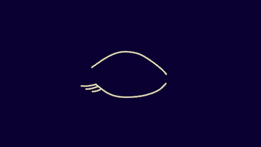
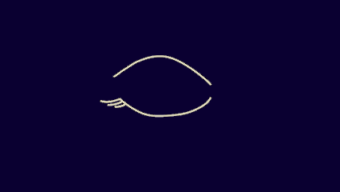
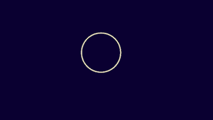

LOS TIPOS DE SUEÑO
El sueño sucede en ciclos, cada ciclo está conformado por dos tipos: REM y NREM,
dentro del NREM hay distintas instancias en las que varía la profundidad del sueño.
REM
RAPID EYE MOVEMENT
Esta etapa se caracteriza por el movimiento rápido de los ojos por debajo de los párpados cerrados. Es el momento en un ciclo de sueño donde ocurren nuestros sueños más vívidos y locos ya que acá la actividad cerebral se acelera.
NREM
NON RAPID EYE MOVEMENT
En esta etapa, el movimiento de los ojos está ausente. Su característica principal es que el sueño NREM está conformada por 3 instancias de sueño, en distintos niveles de profundidad. Estas 3 instancias se conocen también como niveles.
TOCÁ LAS SIGUIENTES ESTRELLAS
PARA REVELAR LA MAGIA

N1 (NREM)
Somnolencia
Es la primera fase, como un puente entre estar despierto y dormir. El cuerpo empieza a soltarse, los párpados pesan y el sueño todavía es muy frágil; cualquier ruido puede despertarte.
DURACIÓN: 1–7 MIN.
DURACIÓN: 1–7 MIN.
N2 (NREM)
Sueño ligero

En esta segunda instancia baja el ritmo cardíaco y la temperatura corporal. Las ondas electromagnéticas del cerebro se desaceleran y el cerebro procesa parte de lo aprendido.
DURACIÓN: 10–25 MIN.
DURACIÓN: 10–25 MIN.

N3 (NREM)
Sueño profundo
En este tercer nivel el cerebro se llena de grandes y poderosas ondas electromagnéticas. Este es el sueño más reparador físicamente. El cerebro funciona a un ritmo muy lento y el cuerpo aprovecha para reparar tejigos, fortalecer defensas y recuperar energía.
DURACIÓN: 20–40 MIN.
DURACIÓN: 20–40 MIN.
REM
Etapa REM

En este último paso, la actividad cerebral se acelera y tenemos los sueños más vívidos. Aunque el cerebro trabaja como si estuvieras despierto, el cuerpo permanece paralizado inmóvil para evitar que nuestro cuerpo "actúe" lo que estamos soñando.
DURACIÓN: 10–60 MIN.
DURACIÓN: 10–60 MIN.